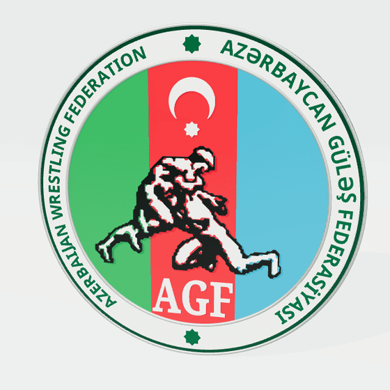
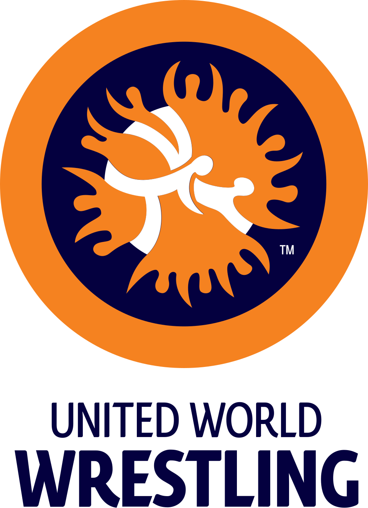

Məlumatlar yüklənir...


Azərbaycan Güləş Federasiyası
İdmançıların beynəlxalq nəticələri (1992-2026)
8057
Toplam nəticə
1349
İdmançı
111
Yarış
Filtrlər
İdmançı axtar
Yarış
Çox seçim
Bütün yarışlar
Hamısını seç
Təmizlə
Uyğun yarış tapılmadı
Yer
Çox seçim
Bütün yerlər
Hamısını seç
Təmizlə
Uyğun yer tapılmadı
İl
Çox seçim
Bütün illər
Hamısını seç
Təmizlə
Uyğun il tapılmadı
Güləş növü
Bütün növlər
Yaş qrupu
Çox seçim
Bütün qruplar
Hamısını seç
Təmizlə
Uyğun yaş qrupu tapılmadı
Çəki kateqoriyası
Çox seçim
Bütün çəkilər
Hamısını seç
Təmizlə
Uyğun çəki tapılmadı
Keçirilmə yeri
Bütün şəhərlər
Filtrlə
Sıfırla
Nəticələr siyahısı
Excel-ə ixrac
№
Tarix
Keçirilmə yeri
İdmançı
Yarışın adı
Güləş növü
Yaş qrupu
Çəki
Yer